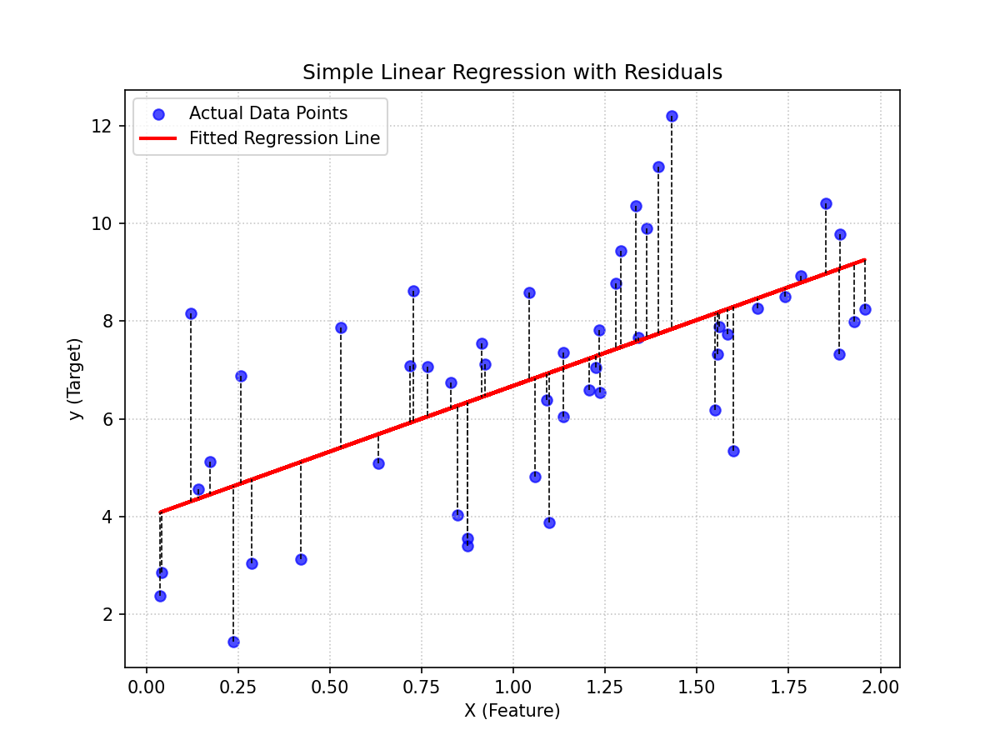
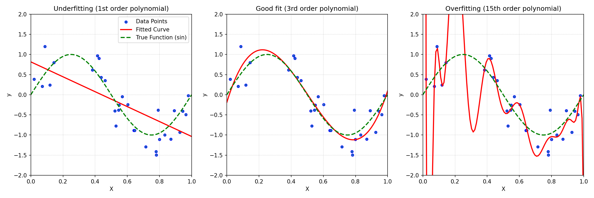
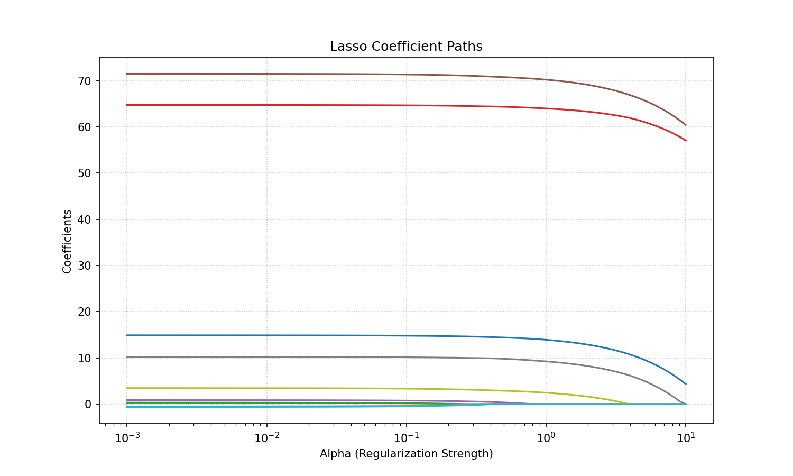
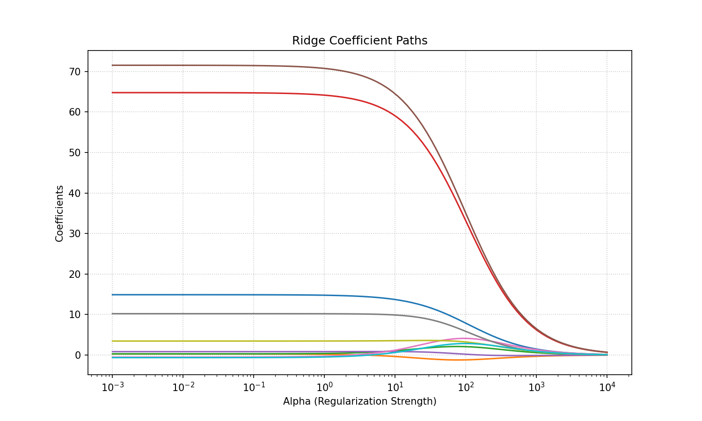

回归与线性模型
学习目标
学习目标：
- 理解线性回归（简单和多元）的基本原理、数学表示和假设条件。
- 掌握损失函数的概念（如MSE）及其在模型优化中的作用。
- 理解梯度下降法的基本思想和过程。
- 了解正则化（L1和L2）的概念、目的以及它们如何帮助缓解过拟合。
- 掌握多项式回归的原理及其如何处理非线性关系。
- 能够使用Scikit-learn库实现、训练和评估上述线性模型。
3.1 什么是回归问题？
在机器学习中，回归 (Regression) 是一种用于预测连续数值输出的任务。与分类任务（预测离散类别标签，如”猫”或”狗”，“垃圾邮件”或”非垃圾邮件”）不同，回归任务的目标是预测一个具体的数量值。
例如：
- 预测房屋的价格（一个连续的金额）。
- 预测明天的气温（一个连续的温度值）。
- 预测一个人的身高（一个连续的长度值）。
- 预测某只股票的未来价格。
回归分析的核心是找到输入特征（自变量，predictors, features）与连续输出（因变量，target, response）之间的关系。我们希望建立一个模型，当给定新的输入特征时，该模型能够给出准确的连续值预测。
3.1.1 回归与分类的关键区别
| 特征 | 回归 (Regression) | 分类 (Classification) |
|---|---|---|
| 输出类型 | 连续数值 (e.g., 1.23, 100, -5.7) | 离散类别 (e.g., “A”, “B”, “C”, True/False) |
| 目标 | 预测一个具体的量 | 将输入划分到预定义的类别中 |
| 示例 | 房价预测, 气温预测, 股票价格预测 | 邮件分类, 图像识别, 疾病诊断 |
| 评估指标 | 均方误差 (MSE), R², 平均绝对误差 (MAE) | 准确率, 精确率, 召回率, F1分数, AUC |
3.2 简单线性回归 (Simple Linear Regression)
简单线性回归是最基础的回归模型之一，它假设输入特征（自变量 (x)）与输出（因变量 (y)）之间存在线性关系。模型的目标是找到一条最佳拟合直线，该直线能够最好地描述数据点之间的趋势。
3.2.1 模型表示
简单线性回归的模型可以表示为：
\[y = \beta_0 + \beta_1 x + \epsilon\]
其中：
- \(y\) 是因变量（我们想要预测的值）。
- \(x\) 是自变量（用于预测的特征）。
- \(\beta_0\) 是截距 (intercept)，表示当 \(x=0\) 时，\(y\) 的预测值。它是直线在 \(y\) 轴上的截距。
- \(\beta_1\) 是斜率 (slope)，表示当 \(x\) 每增加一个单位时，\(y\) 预测值的平均变化量。它代表了 \(x\) 与 \(y\) 之间关系的强度和方向。
- \(\epsilon\) 是误差项 (error term) 或残差 (residual)，代表了模型未能解释的随机波动或变异。它包含了所有影响 \(y\) 但未被包含在模型中的因素，以及固有的随机性。我们通常假设误差项是独立同分布的，并且均值为0。
我们的目标是根据训练数据找到最优的 \(\beta_0\) 和 \(\beta_1\) 值，使得预测值 \(\hat{y} = \beta_0 + \beta_1 x\) 尽可能接近真实的观测值 \(y\)。
3.2.2 参数估计：最小二乘法 (Ordinary Least Squares - OLS)
如何找到最佳的 \(\beta_0\) 和 \(\beta_1\) 呢？最常用的方法是最小二乘法 (Ordinary Least Squares, OLS)。
OLS 的核心思想是最小化残差平方和 (Residual Sum of Squares, RSS)。对于第 \(i\) 个观测数据点 \((x_i, y_i)\)，模型的预测值为 \(\hat{y}_i = \beta_0 + \beta_1 x_i\)。那么，残差为 \(e_i = y_i - \hat{y}_i\)。
RSS 定义为所有数据点残差的平方和：
\[RSS = \sum_{i=1}^{n} e_i^2 = \sum_{i=1}^{n} (y_i - \hat{y}_i)^2 = \sum_{i=1}^{n} (y_i - (\beta_0 + \beta_1 x_i))^2\]
我们选择 \(\beta_0\) 和 \(\beta_1\) 使得 RSS 最小。通过对 RSS 分别求 \(\beta_0\) 和 \(\beta_1\) 的偏导数，并令其等于零，可以解出 \(\beta_0\) 和 \(\beta_1\) 的解析解（闭式解）：
\[\hat{\beta}_1 = \frac{\sum_{i=1}^{n} (x_i - \bar{x})(y_i - \bar{y})}{\sum_{i=1}^{n} (x_i - \bar{x})^2}\]
\[\hat{\beta}_0 = \bar{y} - \hat{\beta}_1 \bar{x}\]
其中 \(\bar{x}\) 和 \(\bar{y}\) 分别是 \(x\) 和 \(y\) 的样本均值。
最小二乘法试图找到一条直线，使得所有数据点到这条直线的垂直距离的平方和最小。
下图展示了简单线性回归中的数据点、拟合直线以及残差：
 (图 3.1: 简单线性回归中的残差图示。红线表示拟合的回归线，蓝色点为实际数据点，虚线表示每个数据点到回归线的残差。)
3.3 多元线性回归 (Multiple Linear Regression)
当预测变量（自变量）不止一个时，简单线性回归就扩展为多元线性回归。例如，预测房价时，我们可能考虑房屋面积、房间数量、地理位置等多个因素。
3.3.1 模型表示
多元线性回归的模型可以表示为：
\[y = \beta_0 + \beta_1 x_1 + \beta_2 x_2 + ... + \beta_p x_p + \epsilon\]
其中：
- \(y\) 是因变量。
- \(x_1, x_2, ..., x_p\) 是 \(p\) 个不同的自变量（特征）。
- \(\beta_0\) 是截距。
- \(\beta_1, \beta_2, ..., \beta_p\) 是对应每个自变量的系数。 \(\beta_j\) 表示在其他自变量保持不变的情况下，\(x_j\) 每增加一个单位，\(y\) 预测值的平均变化量。
- \(\epsilon\) 是误差项。
同样，我们的目标是估计参数 \((\beta_0, \beta_1, ..., \beta_p)\)。
3.3.2 参数估计
与简单线性回归类似，多元线性回归的参数通常也是通过最小二乘法估计的，即最小化 RSS：
\[RSS = \sum_{i=1}^{n} (y_i - (\beta_0 + \beta_1 x_{i1} + \beta_2 x_{i2} + ... + \beta_p x_{ip}))^2\]
虽然也可以通过偏导数求解，但当特征数量 (p) 较大时，手动计算变得复杂。通常使用矩阵代数来表示和求解：
\[\mathbf{y} = \mathbf{X}\beta + \mathbf{\epsilon}\]
参数的OLS估计可以表示为：
\[\hat{\beta} = (\mathbf{X}^T\mathbf{X})^{-1}\mathbf{X}^T\mathbf{y}\]
其中 \(\mathbf{X}\) 是增广后的特征矩阵（包含一列全1对应截距项），\(\mathbf{y}\) 是观测值向量。在实践中，我们通常依赖于计算库（如Scikit-learn）来完成这些计算。
3.4 损失函数与优化
3.4.1 损失函数 (Loss Function)
在线性回归中，我们已经接触到了损失函数的概念。损失函数衡量的是模型预测值与真实值之间的差异。我们的目标是找到一组模型参数，使得损失函数的值最小。
对于回归问题，常用的损失函数是：
- 残差平方和 (RSS): \(\sum (y_i - \hat{y}_i)^2\)
- 均方误差 (Mean Squared Error, MSE): 它是RSS的平均值，是回归中最常用的损失函数和评估指标之一。 \[MSE = \frac{1}{n} \sum_{i=1}^{n} (y_i - \hat{y}_i)^2\]
- 均方根误差 (Root Mean Squared Error, RMSE): MSE的平方根，量纲与目标变量相同。 \[RMSE = \sqrt{MSE}\]
- 平均绝对误差 (Mean Absolute Error, MAE): \[MAE = \frac{1}{n} \sum_{i=1}^{n} |y_i - \hat{y}_i|\]
MAE vs. MSE 对异常值的敏感性:
MAE (平均绝对误差) 对异常值不如 MSE (均方误差) 敏感，因为 MSE 对较大误差进行了平方放大。
3.4.2 优化算法：梯度下降法 (Gradient Descent)
对于某些模型（如线性回归的OLS解），我们可以直接通过数学推导得到参数的解析解。但对于更复杂的模型（如神经网络）或者当数据量非常大时，直接求解可能不可行或效率低下。这时，我们就需要使用迭代优化算法，其中最著名和基础的就是梯度下降法 (Gradient Descent)。
梯度下降法的核心思想是：
- 选择一个初始的参数值（可以是随机的，或全零）。
- 计算损失函数在当前参数值下的梯度（导数）。梯度指向损失函数增长最快的方向。
- 沿着梯度的反方向（即损失函数下降最快的方向）更新参数。更新的步长由学习率 (Learning Rate, (\(\alpha\))) 控制。
- 重复步骤2和3，直到损失函数收敛到某个可接受的最小值，或者达到预设的迭代次数。
参数更新的公式为：
\[ \beta_j := \beta_j - \alpha \frac{\partial J(\beta)}{\partial \beta_j} \] 其中 \(J(\beta)\) 是损失函数，\(\alpha\) 是学习率。
学习率 \(\alpha\) 的选择非常重要：
- 如果 \(\alpha\) 太小，收敛速度会很慢
- 如果 \(\alpha\) 太大，可能会在最小值附近震荡甚至发散，无法收敛
梯度下降的类型：
- 批量梯度下降 (Batch Gradient Descent, BGD): 每次更新参数时，使用训练集中的所有样本来计算梯度。计算开销大，但梯度方向准确，容易收敛到全局最优（对于凸函数）。
- 随机梯度下降 (Stochastic Gradient Descent, SGD): 每次更新参数时，只随机选择一个训练样本来计算梯度。计算开销小，更新速度快，但梯度方向有噪声，可能在最优解附近震荡。有助于跳出局部最优。
- 小批量梯度下降 (Mini-batch Gradient Descent): 每次更新参数时，使用一小批（mini-batch）训练样本来计算梯度。这是BGD和SGD的折中方案，兼顾了效率和稳定性，是实践中最常用的方法。
3.5 正则化 (Regularization)
过拟合 (Overfitting) 是机器学习中常见的问题。当模型在训练数据上表现非常好，但在未见过的测试数据上表现很差时，就发生了过拟合。这通常是因为模型过于复杂，学习到了训练数据中的噪声和特定模式，而这些模式不具有泛化性。
下图形象地展示了欠拟合、合适的拟合以及过拟合的情况：
 (图 3.2: 欠拟合、合适的拟合与过拟合的比较。左图为欠拟合，模型过于简单未能捕捉数据趋势；中图为合适的拟合；右图为过拟合，模型过于复杂，完美拟合训练数据但泛化能力差。) :::
正则化 (Regularization) 是一种用于防止过拟合、提高模型泛化能力的技术。它通过向损失函数中添加一个惩罚项（正则化项）来实现，这个惩罚项会对模型的复杂度（通常是模型参数的大小）进行约束。
3.5.1 L2 正则化 (Ridge Regression - 岭回归)
L2 正则化在损失函数中添加了模型参数平方和的惩罚项。对于线性回归，Ridge回归的损失函数为： \[J(\beta) = MSE + \lambda \sum_{j=1}^{p} \beta_j^2 = \frac{1}{n} \sum_{i=1}^{n} (y_i - (\beta_0 + \sum_{j=1}^{p} \beta_j x_{ij})^2 + \lambda \sum_{j=1}^{p} \beta_j^2\] 其中 \(\lambda \ge 0\) 是正则化参数（也称为 \(\alpha\)），控制正则化的强度。
- 当 \(\lambda = 0\) 时，Ridge回归等价于普通的线性回归。
- 当 \(\lambda \to \infty\) 时，所有系数 \(\beta_j\) (除 \(\beta_0\) 外，通常不对截距项进行正则化) 都会趋向于0。
特点：
- L2 正则化倾向于使模型的参数值变得比较小，但通常不会使它们精确地等于0。
- 它有助于处理特征之间高度相关（多重共线性）的情况。
- 模型参数的解是唯一的。
3.5.2 L1 正则化 (Lasso Regression - 套索回归)
L1 正则化在损失函数中添加了模型参数绝对值之和的惩罚项。Lasso回归的损失函数为： \[J(\beta) = MSE + \lambda \sum_{j=1}^{p} |\beta_j|\] 其中 \(\lambda \ge 0\) 也是正则化参数。
特点：
- L1 正则化一个显著的特点是它能够产生稀疏模型 (sparse model)，即它倾向于将一些不重要特征的系数精确地压缩到0。
- 因此，Lasso回归可以用于特征选择 (feature selection)。
- 当特征数量 (\(p\)) 远大于样本数量 (\(n\)) 时，Lasso特别有用。
3.5.3 弹性网络 (Elastic Net)
弹性网络是L1和L2正则化的结合，其损失函数为： \[J(\beta) = MSE + \lambda_1 \sum_{j=1}^{p} |\beta_j| + \lambda_2 \sum_{j=1}^{p} \beta_j^2\] 或者通常表示为： \[J(\beta) = MSE + \alpha \rho \sum_{j=1}^{p} |\beta_j| + \alpha (1-\rho) \frac{1}{2} \sum_{j=1}^{p} \beta_j^2\] 其中 \(\alpha\) 控制整体正则化强度，\(\rho\) 控制L1和L2的混合比例 \((0 \le \rho \le 1)\)。
弹性网络结合了Lasso的稀疏性和Ridge处理多重共线性的能力。
正则化参数选择：
- 正则化参数（\(\lambda\) 或 \(\alpha\), \(\rho\)）是模型超参数
- 需要通过交叉验证（Cross-Validation）来选择最优值
- 常用方法包括网格搜索（Grid Search）和随机搜索（Random Search）
下图展示了Lasso和Ridge回归中，随着正则化强度 (\(\alpha\) 或 \(\lambda\)) 的增加，各特征系数的变化路径：
 (图 3.3: Lasso回归系数路径。横轴表示正则化强度，纵轴表示系数大小。可见随着正则化强度增加，许多系数被压缩至零。)
 (图 3.4: Ridge回归系数路径。与Lasso不同，Ridge回归的系数会趋向于零但通常不会精确为零。)
3.6 多项式回归 (Polynomial Regression)
线性回归模型假设自变量和因变量之间是线性关系。但现实世界中的数据往往存在非线性关系。多项式回归 (Polynomial Regression) 是一种通过创建自变量的多项式特征来拟合非线性数据的方法。
例如，对于单个自变量 \(x\)，一个 \(d\) 阶多项式回归模型可以表示为： \[ y = \beta_0 + \beta_1 x + \beta_2 x^2 + ... + \beta_d x^d + \epsilon \]
虽然模型形式看起来是非线性的，但它对于参数 (\(\beta_j\)) 仍然是线性的。我们可以通过创建新的特征 (\(x_1=x, x_2=x^2, ..., x_d=x^d\)) 将其转换为一个标准的多元线性回归问题，然后使用与之前相同的方法（如OLS或梯度下降）来估计参数。
多项式回归关键点：
- 阶数选择 (degree, d):
- 阶数太低 → 欠拟合（无法捕捉数据非线性趋势）
- 阶数太高 → 过拟合（训练集表现好但测试集差，拟合曲线剧烈波动）
- 选择方法：交叉验证或观察拟合效果
- 特征缩放:
- 高阶多项式特征（如\(x^{10}\)）尺度会变得非常大
- 可能导致数值计算问题
- 建议：进行标准化等特征缩放处理
3.7 使用 Scikit-learn 实现线性回归模型
Scikit-learn 提供了易于使用的接口来实现各种线性回归模型。
# 导入必要的库
import numpy as np
import pandas as pd
import matplotlib.pyplot as plt
import seaborn as sns
from sklearn.model_selection import train_test_split
from sklearn.linear_model import LinearRegression, Ridge, Lasso, ElasticNet
from sklearn.preprocessing import PolynomialFeatures, StandardScaler
from sklearn.pipeline import Pipeline
from sklearn.metrics import mean_squared_error, r2_score
# 设置Matplotlib和Seaborn的样式 (可选)
plt.style.use('seaborn-v0_8-whitegrid')
sns.set_palette("husl")
# 为了示例，我们创建一个简单的合成数据集
np.random.seed(42) # 为了结果可复现
X = 2 * np.random.rand(100, 1) # 一个特征
y = 4 + 3 * X + np.random.randn(100, 1) # y = 4 + 3x + 噪声
# 可视化数据
plt.figure(figsize=(8, 6))
plt.scatter(X, y)
plt.title('合成的线性数据')
plt.xlabel('X (特征)')
plt.ylabel('y (目标)')
plt.show()
# 划分训练集和测试集
X_train, X_test, y_train, y_test = train_test_split(X, y, test_size=0.2, random_state=42)
print(f"训练集大小: X_train={X_train.shape}, y_train={y_train.shape}")
print(f"测试集大小: X_test={X_test.shape}, y_test={y_test.shape}")3.7.1 简单线性回归 (Scikit-learn)
# 创建线性回归模型实例
lin_reg = LinearRegression()
# 训练模型
lin_reg.fit(X_train, y_train)
# 查看模型参数
print(f"\n简单线性回归模型:")
print(f"截距 (beta_0): {lin_reg.intercept_}") # 应接近 4
print(f"系数 (beta_1): {lin_reg.coef_}") # 应接近 3
# 在测试集上进行预测
y_pred_lin = lin_reg.predict(X_test)
# 评估模型
mse_lin = mean_squared_error(y_test, y_pred_lin)
r2_lin = r2_score(y_test, y_pred_lin) # R-squared: 决定系数
print(f"均方误差 (MSE): {mse_lin:.4f}")
print(f"R² 分数: {r2_lin:.4f}")
# 可视化拟合结果
plt.figure(figsize=(8, 6))
plt.scatter(X_test, y_test, color='blue', label='实际值')
plt.plot(X_test, y_pred_lin, color='red', linewidth=2, label='预测值 (线性回归)')
plt.title('简单线性回归拟合')
plt.xlabel('X (特征)')
plt.ylabel('y (目标)')
plt.legend()
plt.show()3.7.2 多元线性回归
为了演示多元线性回归，我们假设 X 有多个特征。如果 X 只有一个特征，多元线性回归的结果与简单线性回归相同。 假设我们有 X_multi_train 和 X_multi_test 包含多个特征。
# # 假设 X_multi 是一个多特征的 NumPy 数组
# # X_multi_train, X_multi_test, y_train, y_test = train_test_split(X_multi, y, test_size=0.2, random_state=42)
# multi_lin_reg = LinearRegression()
# multi_lin_reg.fit(X_multi_train, y_train)
# print(f"\n多元线性回归模型:")
# print(f"截距 (beta_0): {multi_lin_reg.intercept_}")
# print(f"系数 (beta_j): {multi_lin_reg.coef_}")
# y_pred_multi = multi_lin_reg.predict(X_multi_test)
# mse_multi = mean_squared_error(y_test, y_pred_multi)
# r2_multi = r2_score(y_test, y_pred_multi)
# print(f"均方误差 (MSE): {mse_multi:.4f}")
# print(f"R² 分数: {r2_multi:.4f}")由于我们当前的 X 只有一个特征，多元线性回归部分的代码将与简单线性回归相同。在后续章节处理更复杂数据集时，多元回归的应用会更明显。
3.7.3 Ridge 回归 (L2 正则化)
# 创建Ridge回归模型实例
# alpha 参数即为正则化强度 lambda
ridge_reg = Ridge(alpha=1.0, solver="cholesky") # solver参数可以根据情况选择
ridge_reg.fit(X_train, y_train)
print(f"\nRidge 回归模型 (alpha=1.0):")
print(f"截距: {ridge_reg.intercept_}")
print(f"系数: {ridge_reg.coef_}")
y_pred_ridge = ridge_reg.predict(X_test)
mse_ridge = mean_squared_error(y_test, y_pred_ridge)
r2_ridge = r2_score(y_test, y_pred_ridge)
print(f"均方误差 (MSE): {mse_ridge:.4f}")
print(f"R² 分数: {r2_ridge:.4f}")
# 尝试不同的alpha值
ridge_reg_low_alpha = Ridge(alpha=0.1)
ridge_reg_low_alpha.fit(X_train, y_train)
print(f"Ridge 回归系数 (alpha=0.1): {ridge_reg_low_alpha.coef_}")
ridge_reg_high_alpha = Ridge(alpha=100)
ridge_reg_high_alpha.fit(X_train, y_train)
print(f"Ridge 回归系数 (alpha=100): {ridge_reg_high_alpha.coef_}")3.7.4 Lasso 回归 (L1 正则化)
# 创建Lasso回归模型实例
lasso_reg = Lasso(alpha=0.1) # Lasso的alpha通常需要仔细调整
lasso_reg.fit(X_train, y_train)
print(f"\nLasso 回归模型 (alpha=0.1):")
print(f"截距: {lasso_reg.intercept_}")
print(f"系数: {lasso_reg.coef_}") # 对于单特征，可能不会变为0，除非alpha很大或特征不重要
y_pred_lasso = lasso_reg.predict(X_test)
mse_lasso = mean_squared_error(y_test, y_pred_lasso)
r2_lasso = r2_score(y_test, y_pred_lasso)
print(f"均方误差 (MSE): {mse_lasso:.4f}")
print(f"R² 分数: {r2_lasso:.4f}")
# 尝试一个更大的alpha，看系数是否变为0 (对于当前单特征简单数据可能效果不明显)
lasso_reg_high_alpha = Lasso(alpha=1.0)
lasso_reg_high_alpha.fit(X_train, y_train)
print(f"Lasso 回归系数 (alpha=1.0): {lasso_reg_high_alpha.coef_}")对于Lasso的特征选择效果，在多特征且部分特征不重要的数据集上会更明显。
3.7.5 多项式回归
# 生成非线性数据作为示例
np.random.seed(42)
m = 100
X_poly_data = 6 * np.random.rand(m, 1) - 3
y_poly_data = 0.5 * X_poly_data**2 + X_poly_data + 2 + np.random.randn(m, 1) # y = 0.5x^2 + x + 2 + noise
plt.figure(figsize=(8,6))
plt.scatter(X_poly_data, y_poly_data)
plt.title('合成的非线性数据 (二次方关系)')
plt.xlabel('X')
plt.ylabel('y')
plt.show()
# 1. 添加多项式特征
degree = 2 # 我们知道数据是二次的，但实践中需要尝试
poly_features = PolynomialFeatures(degree=degree, include_bias=False) # include_bias=False因为LinearRegression会处理
X_poly_transformed = poly_features.fit_transform(X_poly_data)
# 2. 训练线性回归模型
poly_lin_reg = LinearRegression()
poly_lin_reg.fit(X_poly_transformed, y_poly_data)
print(f"\n多项式回归模型 (degree={degree}):")
print(f"截距: {poly_lin_reg.intercept_}") # 应该接近 2
print(f"系数 (x, x^2): {poly_lin_reg.coef_}") # 应该接近 [1, 0.5]
# 准备画图用的X值
X_new_poly = np.linspace(-3, 3, 100).reshape(100, 1)
X_new_poly_transformed = poly_features.transform(X_new_poly)
y_new_poly_pred = poly_lin_reg.predict(X_new_poly_transformed)
plt.figure(figsize=(8,6))
plt.scatter(X_poly_data, y_poly_data, label='实际数据')
plt.plot(X_new_poly, y_new_poly_pred, "r-", linewidth=2, label=f"预测值 (多项式 degree={degree})")
plt.title('多项式回归拟合')
plt.xlabel('X')
plt.ylabel('y')
plt.legend()
plt.show()
# 尝试一个高阶多项式看是否过拟合 (这里数据简单，可能不明显)
degree_high = 20
poly_features_high = PolynomialFeatures(degree=degree_high, include_bias=False)
X_poly_transformed_high = poly_features_high.fit_transform(X_poly_data)
poly_lin_reg_high = LinearRegression()
poly_lin_reg_high.fit(X_poly_transformed_high, y_poly_data)
y_new_poly_pred_high = poly_lin_reg_high.predict(poly_features_high.transform(X_new_poly))
plt.figure(figsize=(8,6))
plt.scatter(X_poly_data, y_poly_data, label='实际数据')
plt.plot(X_new_poly, y_new_poly_pred, "r-", linewidth=2, label=f"预测值 (degree={degree})")
plt.plot(X_new_poly, y_new_poly_pred_high, "g--", linewidth=2, label=f"预测值 (degree={degree_high})")
plt.title(f'多项式回归拟合 (degree {degree} vs {degree_high})')
plt.xlabel('X')
plt.ylabel('y')
plt.ylim([min(y_poly_data)-1, max(y_poly_data)+5]) # 调整y轴范围以便观察
plt.legend()
plt.show()在Scikit-learn中，可以使用 Pipeline 来串联多个步骤，例如特征缩放、多项式特征生成和模型训练，这使得代码更简洁，并有助于避免在交叉验证中数据泄露。
from sklearn.pipeline import Pipeline
from sklearn.preprocessing import StandardScaler
# 创建一个包含多项式特征、特征缩放和线性回归的Pipeline
poly_regression_pipeline = Pipeline([
("poly_features", PolynomialFeatures(degree=2, include_bias=False)),
("std_scaler", StandardScaler()), # 特征缩放，对多项式回归尤其重要
("lin_reg", LinearRegression())
])
poly_regression_pipeline.fit(X_poly_data, y_poly_data.ravel()) # y需要是一维的
y_pipeline_pred = poly_regression_pipeline.predict(X_new_poly)
# ... 后续可以进行可视化和评估3.8 本章小结
本章我们详细学习了监督学习中的回归任务，重点介绍了线性回归模型。我们从简单线性回归开始，理解了其模型表示和基于最小二乘法的参数估计。接着扩展到多元线性回归，并讨论了更通用的损失函数概念以及梯度下降这一核心优化算法。为了解决过拟合问题，我们学习了L1（Lasso）和L2（Ridge）正则化方法。最后，我们探讨了多项式回归，作为一种处理非线性关系的有效手段。通过Scikit-learn的实践，我们掌握了这些模型在Python中的实现、训练和评估。
线性模型是许多更复杂模型的基础，理解它们的工作原理至关重要。
3.9 思考与练习
3.9.1 基础练习
- 概念辨析：
- 解释回归问题与分类问题的主要区别。
- 简单线性回归和多元线性回归在模型假设和参数数量上有何不同？
- 为什么需要损失函数？列举至少两种回归任务中常用的损失函数。
- 梯度下降法中的”学习率”起什么作用？如果学习率设置过大或过小，分别可能导致什么问题？
- 最小二乘法： 对于简单线性回归 \(y = \beta_0 + \beta_1 x\)，写出其残差平方和 (RSS) 的表达式。最小二乘法的目标是什么？
- 正则化对比：
- L1正则化（Lasso）和L2正则化（Ridge）在惩罚项上有何不同？
- 它们各自倾向于产生什么样的模型参数？哪一个可以用于特征选择，为什么？
- 多项式回归： 如果一个数据集的真实关系是 \(y = 2x^3 - x^2 + 5x + \text{noise}\)，你认为使用几阶的多项式回归模型最合适？如果选择的阶数过高或过低，会怎样？
3.9.2 编码与实践
- 手动实现简单线性回归参数计算：
- 创建一个小型的、只有单个特征的合成数据集（例如5-10个数据点）。
- 根据本章给出的 \(\hat{\beta}_0\) 和 \(\hat{\beta}_1\) 的解析解公式，使用NumPy手动计算这两个参数。
- 使用Scikit-learn的
LinearRegression训练同一个数据集，比较你手动计算的参数与Scikit-learn给出的参数是否一致。
- 正则化效果观察：
- 使用Scikit-learn中的
make_regression函数生成一个包含较多特征（例如10-20个）且部分特征信息量较低（或有共线性）的数据集。 - 分别训练普通的线性回归、Ridge回归和Lasso回归模型。
- 比较三种模型得到的系数。对于Ridge和Lasso，尝试不同的
alpha值（例如0.01, 0.1, 1, 10, 100），观察系数是如何变化的。特别是Lasso回归，观察哪些系数在alpha增大时会变为0。
- 使用Scikit-learn中的
- 多项式回归与过拟合：
- 生成一个简单的非线性数据集（例如基于
sin(x)或cos(x)并加上一些噪声）。 - 分别使用不同阶数（例如1, 2, 3, 5, 10, 20）的多项式回归模型去拟合这些数据。
- 将训练集和测试集分开。对于每个阶数，计算模型在训练集和测试集上的MSE。
- 绘制模型在测试集上的MSE随多项式阶数变化的曲线。你观察到了什么现象？哪个阶数似乎是比较好的选择？
- 生成一个简单的非线性数据集（例如基于
3.9.3 推荐阅读
- 《An Introduction to Statistical Learning (with Applications in R or Python)》 - Chapter 3: Linear Regression: (ISLR/ISLP) 这本书对线性回归有非常清晰和深入的讲解，包括理论和实践。有免费的PDF版本，并且有R和Python的配套代码。 (https://www.statlearning.com/)
- 《动手学深度学习》 - 线性回归章节: 虽然是深度学习教材，但其线性回归部分从零开始实现，有助于理解底层原理。 (https://zh.d2l.ai/chapter_linear-networks/linear-regression.html)
- Scikit-learn官方文档 - Linear Models: (https://scikit-learn.org/stable/modules/linear_model.html) 详细介绍了Scikit-learn中各种线性模型的用法、参数和示例。
- Andrew Ng的机器学习课程 (Coursera/Stanford) - Linear Regression 部分: 吴恩达教授的课程是机器学习入门的经典，他对线性回归、梯度下降的讲解非常直观易懂。